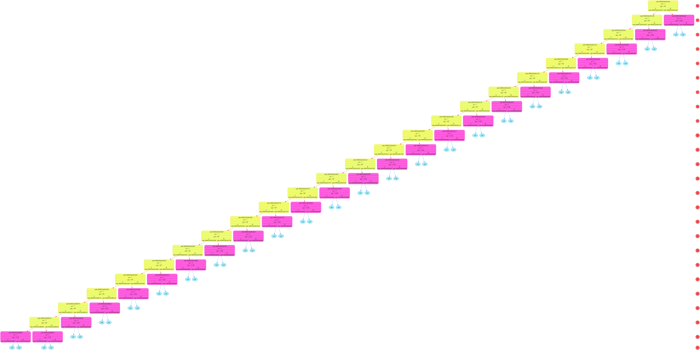

READ_file: addr buffer_adr = 2561661243920
=============================================================================
Symbol = <(>, his addr = 2561661243920
Symbol = <x>, his addr = 2561661243921
Symbol = <+>, his addr = 2561661243922
Symbol = <x>, his addr = 2561661243923
Symbol = <)>, his addr = 2561661243924
Symbol = <$>, his addr = 2561661243925
symbol = <\r>, addr = 2561661243926
symbol = <\n>, addr = 2561661243927
symbol = <\0>, addr = 2561661243928
=============================================================================
